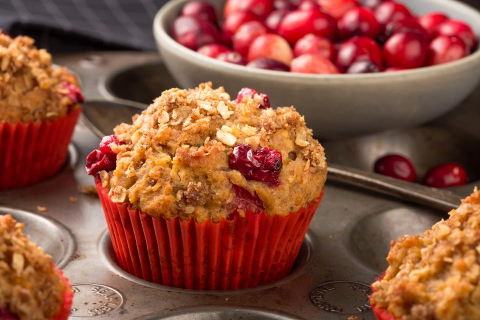

Малки сладки и солени идеи и изкушения
Някой ги наричат кексчета, други предпочитат американското им име - мъфини.
Ние ги обичаме всякак - и сладки, и солени.
Някой ги наричат кексчета, други предпочитат американското им име - мъфини.
Ние ги обичаме всякак - и сладки, и солени.
И тъй като се задават хладни температури, не ни остава нищо друго освен да се завъртим около хладилника, да огледаме какви продукти имаме и да се вдъхновим с тези 30 златни рецепти за малките вкусни тестени изкушения от архива на Edna.bg.
Загрейте фурната, запретнете ръкавите и нека ги приготвим така, както ги обичаме най-много!
Готови - 1 - 2 - 3!
Необходими продукти:
190 г фини овесени ядки
150 г кокосова захар
200 мл прясно мляко
50 мл олио
2 банана
2 яйца
2 с. л. мед
1 пакетче бакпулвер (10 г)
1 ванилия
кората от 1 портокал
50 г шоколадови калети
50 г захаросан кокос
50 г сурови бадеми
1 банан
Бананите се смилат с прясното мляко, олиото и яйцата.
Прибавят се овесените ядки, ванилията, кокосовата захар, медът, бакпулверът и настърганата портокалова кора. Отново се смила.
Сместа се разпределя в тава за мъфини, в дупките на която са поставени хартиени формички.
Мъфините се гарнират с накълцани шоколадови калети и бадеми, захаросан кокос и нарязани на кубчета банани.
Пекат се 10–15 минути в загрята на 180 градуса фурна, с вентилатор, след което се охлаждат добре.
Време за приготвяне: 40 минути (време за отлежаване на тестото)
за тестото:
250 г брашно
75 г кафява захар
150 г меко краве масло (не разтопено)
1 жълтък
настърганата кора от 1 лимон
краве масло за тавата
1 белтък
кокосови стърготини
2 с. л. плодово желе
1. От продуктите се омесва гладко тесто и се оставя 1 час в хладилник.
2. Оформят се топчета, по-малки от орех.
3. Потапят се в леко разбития белтък и се овалват в кокосови стърготини.
4. Сладките се нареждат в намаслена тава. По средата на всяка се прави кладенче, което се пълни наполовина с плодово желе.
5. Пекат се 20–25 минути до зачервяване на 180 градуса.
Необходими продукти за 3-4 кексчета:
2 супени лъжици какао на прах
3 супени лъжици брашно
1/4 чаена лъжичка бакпулвер
1/8 чаена лъжичка сол
3-4 супени лъжици захар
12 мл олио
30 мл прясно мляко
1 капсула ванилия
Смесете всички сухи продукти. След това смесете всички течни съставки и ги добавете към сухите. Разбъркайте добре сместа.
Намазнете формичките за мъфини и изсипете сместа. Изпечете кекса в микровълнова фурна за 30-40 секунди на пълна мощност.
* Може да изпечете кексчето дори в чаша. Внимавайте има опасност, ако напълните формите над 2/3 от обема им - те да изкипят отвън. Можете да използвате силиконови или хартиени форми за мъфини, запълвайки всяка от тях с 1 супена * Може да изпечете кексчето дори в чаша. Внимавайте има опасност, ако напълните формите над 2/3 от обема им - те да изкипят отвън. Можете да използвате силиконови или хартиени форми за мъфини, запълвайки всяка от тях с 1 супена
няколко кори за баница
течно масло за намазване
2 яйца
1 чаена чаша кисело мляко
1/2 чаена чаша олио
количество брашно за кексово тесто
1/2 чаена лъжичка бакпулвер
1 чаена чаша накъсано пилешко
1 скилидка пресован чесън
1 чаена лъжичка мащерка
сол и черен пипер на вкус
* Намажете с масло формички (малки купички) за крем карамел или такива за мъфини. Нарежете корите на квадрати с големина около 15 см и леко ги намаслете. Сложете ги в намазаните чашки като ги застъпвате. В една формичка трябва да има 3-4 пласта кори.
* Разбийте с тел или вилица яйцата и добавете млякото. Разбъркайте и сипете олиото. Добавете брашното, предварително пресято с бакпулвера. Овкусете със сол и пипер.
* Подправете месото и гъбите с мащерката и чесъна и ги прибавете към кексовото тесто.
* Сипете сместа в подготвените с кори за баница формички и изпечете до готовност в предварително загрята на 180 градуса фурна.
*Заменете замразените малини с пресни такива. Изберете здрави и стегнати плодове.
*Ако нямате малини, заменете ги с друг кисел плод. Можете да заместите плодовете и с малко парче шоколад или да ги оставите без пълнеж.
*Вместо олио от гроздови семки, използвайте предпочитана от вас течна растителна мазнина.
*Може да замените какаото с рожково брашно.
Не се препоръчва да използвате шоколад с по-малко процентно съдържание на какао, защото тези шоколади обикновено съдържат млечни продукти и са неподходящи за хора, които имат непоносимост към млечни продукти или са ги изключили от менюто си по собствено желание. Теди
*Ако обичате кексчетата да са по-сладки, увеличете количеството захар с 1/4 ч.ч. *Ако не харесвате черен шоколад с високо съдържание на какао, заместете го с такъв, който е с 60% какао. Можете да го подсладите допълнително, като добавите 1 с.л. пудра захар, докато го разтопявате.
Някои храни, богати на въглехидрати, обаче всъщност са много полезни за нашия хранителен режим и спомагат за отслабването.